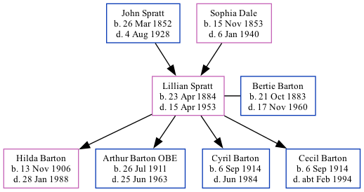

Lillian Barton (née Spratt) 1884 - 1953
[ Home ] | [ Calendar ] | [ Surnames Index ] | [ Family History ]A domestic general servant and the daughter of John Spratt (an agricultural laborer) and Sophia DaleLillian Spratt, the great-aunt of Nigel Horne, was born in St Nicholas-at-Wade, Kent, England on Apr 23, 18841,2,3,4,5,6,7, was baptized there on Jul 6, 1884 and married Bertie Barton (a builder & public work's contractor with whom she had 4 children: Hilda May, Arthur George, Cyril Henry and Cecil John) in Thanet, Kent, England on Dec 23, 19058.
Lillian spent all of her life in Kent, England. Throughout her life, she lived in several places around the county: at Shuart Cottage, Podden Street in St Nicholas-at-Wade on Apr 5, 18911; at Rising Sun, 103 Reculver Road, Beltinge on Mar 31, 190110; at Phyllis Bungalow, Osborne Gardens, Reculver on Apr 2, 19119; and at Three Ways, Reculver Road, Herne Bay on Sep 29, 19394.
She died on Apr 15, 1953 in Bridge, Kent, England6.
Parents
- John was born on Mar 26, 1852
- Sophia was born on Nov 15, 1853
Children
- Hilda May was born on Nov 13, 1906
- Arthur George was born on Jul 26, 1911
- Cyril Henry was born on Sep 6, 1914
- Cecil John was born on Sep 6, 1914
Citations
- 1891 England Census Online publication - Provo, UT, USA: The Generations Network, Inc., 2005.Original data - Census Returns of England and Wales, 1891. Kew, Surrey, England: The National Archives of the UK (TNA): Public Record Office (PRO), 1891. Data imaged from The National
- 1901 England Census Online publication - Provo, UT, USA: The Generations Network, Inc., 2005.Original data - Census Returns of England and Wales, 1901. Kew, Surrey, England: The National Archives of the UK (TNA): Public Record Office (PRO), 1901. Data imaged from the National
- 1911 England Census Online publication - Provo, UT, USA: Ancestry.com Operations, Inc., 2011.Original data - Census Returns of England and Wales, 1911. Kew, Surrey, England: The National Archives of the UK (TNA), 1911. Data imaged from the National Archives, London, England.
- 1939 Register - Findmypast (was the wife of the head of the household)
- England & Wales births 1837-2006 - Findmypast
- England & Wales deaths 1837-2007 - Findmypast
- England & Wales, FreeBMD Birth Index, 1837-1915 Online publication - Provo, UT, USA: The Generations Network, Inc., 2006.Original data - General Register Office. England and Wales Civil Registration Indexes. London, England: General Register Office. © Crown copyright. Published by permission of the Cont
- England & Wales marriages 1837-2008 - Findmypast
- 1911 Census for England & Wales - Findmypast (was age 26 and the wife of the head of the household)
- 1901 England, Wales & Scotland Census - Findmypast (was age 16 and a niece in the household)
Media
Herne Bay Press - 17 Feb 1961

1939 Register Transcription - TNA-R39-1741-1741D-003-22
1911 Census for England & Wales - GBC/1911/RG14/04360/0035/2
Kent, Canterbury Archdeaconry banns 1754-1928 - GBPRS/CANT/M/94045620/2
England & Wales marriages 1837-2008 - BMD/M/1905/4/AZ/000363/217
England & Wales births 1837-2006 - BMD/B/1884/2/AZ/000552/275
1901 England, Wales & Scotland Census - GBC-1901-0006243968
1901 England, Wales & Scotland Census Transcription - GBC-1901-0006243970
Kent Baptisms - GBPRS/CANT/B/96802229
England Births & Baptisms 1538-1975 - R_884661231
England & Wales deaths 1837-2007 - BMD/D/1953/2/AZ/000057/067
1939 Register - TNA/R39/1741/1741D/003/23
Family Tree
Generated by ged2site. Last updated on Nov 13, 2024